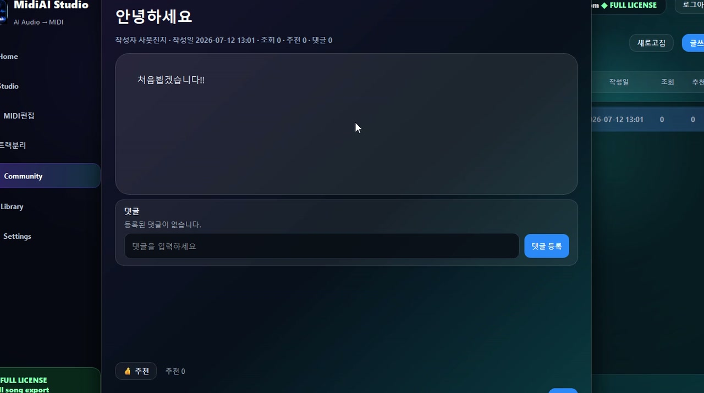

Guide · YouTube & covers
How Content Creators Use Converted MIDI
Content creators live and die by fit — a music cue has to match the length, mood, and rhythm of an edit, and a fixed audio clip almost never does out of the box. MIDI changes that equation, because a converted part is endlessly adjustable in tempo, key, instrumentation, and length in ways a rendered track can never be.
The appeal is speed with control. Instead of scrolling a stock library hoping to find a clip that is close enough, a creator can take a musical idea, convert it to MIDI, and reshape it to fit the project exactly — a workflow that turns music from a constraint into a flexible ingredient.
This guide is aimed at video makers, streamers, and podcasters who want that flexibility. It shows how MidiAI Studio fits a creator's pipeline, and — importantly — how to keep the resulting soundtrack on clean footing rather than borrowing rights you do not have.

Why MIDI beats a fixed audio clip for creators
For content creators, converted MIDI is adaptable musical raw material: a set of note data that can be re-timed, re-keyed, re-instrumented, and re-arranged to fit a specific video, stream, or episode. It is music as a malleable asset rather than a fixed clip.
The defining advantage over rendered audio is editability at every axis — length, tempo, instrumentation, and arrangement all remain adjustable after the fact, which is exactly what production timelines demand.
Re-scoring a cue to fit your edit's timing
Because MIDI is note data rather than recorded sound, a creator can stretch a cue to fill a forty-second segment or compress it to fit a fifteen-second bumper without the pitch artifacts or audible splices that plague time-stretched audio. The music simply re-renders at the new length, seamlessly.
Instrumentation becomes a creative dial. The same converted melody can be voiced on a warm piano for a reflective vlog or a bright synth for a gaming stream, letting a creator match their channel's identity by swapping sounds rather than sourcing new music. MidiAI Studio provides the editable part; the DAW provides the palette.
Crucially, this flexibility interacts with rights. Converting a copyrighted track to MIDI and using it publicly borrows a composition you do not own, so the responsible creator uses conversion to build rights-clear material — reshaping public-domain melodies, their own playing, or licensed content — rather than lifting protected songs into their videos.
Swapping instruments to match a channel's vibe
Scoring a travel vlog segment to exact timing
Picture a travel vlogger with a fifty-second sunset montage that needs music building to a gentle peak right at the thirty-eight-second mark, when the sun dips below the horizon. A stock clip would either end too soon or peak in the wrong place.
Working from a public-domain folk melody in G major, the creator converts it to MIDI, then stretches and arranges it in their DAW so the crescendo lands exactly on that thirty-eight-second beat. They voice it on strings and a soft piano to match the montage's warmth.
The result fits the edit like a glove because the music bent to the video rather than the reverse. Because the source was public-domain and the arrangement their own, the soundtrack is clean, and the reusable MIDI cue can be re-timed for the next video in minutes.

Adjusting length without an audible seam
- Start from rights-clear source material. Build cues from public-domain melodies, your own playing, or properly licensed content. Starting clean means the flexibility you gain never comes with a rights problem attached.
- Convert to MIDI for full editability. Turn your source into MIDI so tempo, key, length, and instrumentation all stay adjustable. This is the step that transforms fixed music into a malleable asset.
- Fit the cue to your edit's timing. Stretch or compress the part so its structure aligns with your video's beats and peaks. MIDI re-times without the artifacts that plague stretched audio.
- Voice it to your channel's identity. Swap instruments to match your content's mood — warm acoustic, bright synth, or cinematic strings. Reusing one part across many sounds keeps your brand consistent.
- Save cues to a reusable library. Archive your adaptable MIDI cues by mood and length. A personal library means the next project starts from a fitting asset rather than a blank search.
Layering converted parts into a custom bed
- Build your library from public-domain, original, or licensed sources only.
- Re-time cues in MIDI rather than time-stretching rendered audio.
- Keep a consistent instrument palette so cues share your channel's identity.
- Tag cues by mood, tempo, and length for fast retrieval.
- Render final audio per project so each cue fits that edit exactly.
Keeping your soundtrack clearances clean
- Lifting copyrighted tracks into videos: Converting a protected song to MIDI and publishing it borrows rights you do not hold.
- Time-stretching audio instead of MIDI: Stretched audio smears and artifacts, while MIDI re-times cleanly at any length.
- Ignoring channel consistency: Random instrumentation per video dilutes the sonic identity a palette would build.
- Not archiving cues: Rebuilding music from scratch each time wastes the reusability MIDI offers.
- Assuming stock is always clearance-free: Even library music has terms; confirm your license covers your platform and use.
Building a reusable library of MIDI cues
The mental shift for creators is to stop thinking of music as something you find and start thinking of it as something you fit. A rendered clip is a fixed object you hope matches your edit; a MIDI cue is clay you shape to the edit's exact contours. That shift, more than any single feature, is what makes conversion so powerful in a production pipeline.
Flexibility compounds over time in a way that fixed assets never do. Each MIDI cue you build with MidiAI Studio can be re-timed, re-keyed, and re-voiced for future projects, so a small library quietly becomes a large one in usefulness. The upfront work of converting and arranging pays dividends across every video that follows.
From reference track to original, rights-clear music
It is worth being clear-eyed that this same flexibility must be paired with rights discipline. The technology makes it trivially easy to reshape any music, including music you have no right to distribute, so the responsible creator treats source selection as seriously as editing. Building from public-domain, original, or licensed material keeps the whole channel out of trouble.
The most rewarding trajectory is from reference to original. Creators often begin by studying how a track they admire is built, then use that understanding to make their own rights-clear cues that capture the same feeling. In that arc, conversion is not a shortcut around creativity but a springboard into it, and the resulting soundtrack is both fitting and genuinely yours.
FAQ
Straight answers for musicians researching MIDI for music content creators. Expand any question—answers stay on this page so you do not bounce away mid-read.
Why is MIDI better than a stock audio clip for content creators?
Because MIDI stays editable in length, tempo, key, and instrumentation, so it can be shaped to fit an edit exactly. A rendered clip is fixed, forcing your video to bend to the music instead of the reverse.
How can I make a music cue hit a specific moment in my video?
Convert the source to MIDI and stretch or compress its structure so a peak lands on your target beat. MIDI re-times without the pitch artifacts or seams that stretched audio produces.
Can I use a converted pop song as background music for my videos?
Not responsibly — converting a copyrighted song to MIDI and publishing it borrows a composition you do not own. Build cues from public-domain, original, or licensed material to keep your soundtrack clean.
How do I keep a consistent sound across all my content with MIDI?
Reuse a set instrument palette when voicing your converted cues, so different pieces of music still share your channel's identity. One arrangement can be re-voiced many ways while staying on-brand.
Is it worth building a personal library of MIDI cues?
Yes — archived, tagged cues let each new project start from a fitting, adaptable asset instead of a blank search. Because MIDI re-times and re-voices easily, one cue serves many future videos.